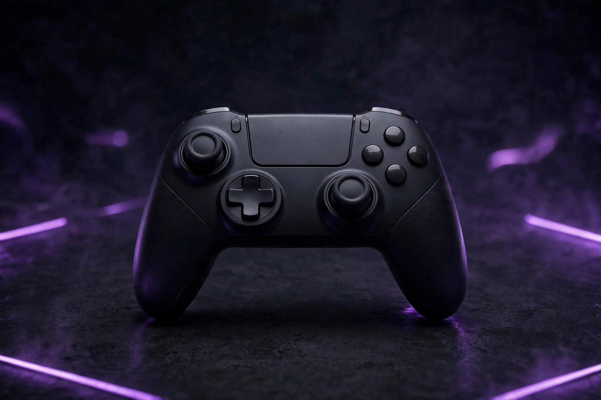
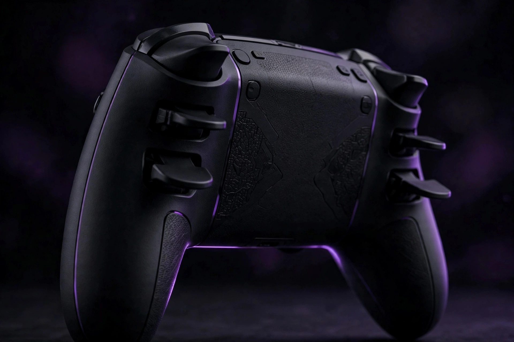

What to look for in a budget gaming controller

The budget controller market flipped in the last few years: the features that used to justify premium prices — drift-free sticks, low latency, extra buttons — now show up under $50. Models like the 8BitDo Ultimate 2C at $39.99 and the GameSir G7 SE at $44.99 pack Hall effect sticks, bringing drift-resistant hardware into the budget tier. But the cheap end also got cheaper, and the difference between a $30 steal and a $20 regret comes down to one spec. Here's the buying order.
1. The stick sensor: the spec that decides everything
Stick drift — the cursor moving when your thumb isn't touching the stick — is the most common controller failure, and it's the problem Hall effect sticks were built to solve. Instead of physical contact that wears down with use, Hall effect sticks read the stick's position magnetically, with no wear surface to degrade — which is why guides describe the technology as eliminating drift, the primary failure point of older, more expensive controllers.
The single biggest mistake when buying a cheap controller is ignoring the stick sensor type. On any product listing, search the specs for "Hall effect" (or "anti-drift"). If the listing doesn't name the sensor type at all, assume traditional potentiometers and price it accordingly — a mystery sensor at the low end is the cheapest part of a cheap controller. Controllers that advertise Hall effect name it loudly, because it's their best feature.
2. The connection: wired, 2.4GHz, or Bluetooth
| Connection | Latency | Best for | Catch |
|---|---|---|---|
| Wired (USB) | Lowest | Desk play, competitive shooters | Cable on the desk |
| 2.4GHz dongle | Near-wired | Couch gaming without compromise | Costs more; a dongle to lose |
| Bluetooth | Good, varies | Casual play, travel | Occasional interference, pairing quirks |
For competitive shooters, wired remains the recommendation — the cable never needs charging and latency is as low as it gets. For couch gaming, a 2.4GHz wireless dongle offers a near-identical experience to wired without the cable. Bluetooth is fine for casual play but varies more between devices. Budget rule of thumb: if the price is tight, go wired — the money a wireless budget pad spends on its radio is money it didn't spend on its sticks and buttons.
3. Compatibility: XInput and the platform question
Most PC controllers are plug-and-play through the XInput standard — Windows sees them immediately, and most games map them correctly without drivers. The platform question matters more than the standard: a pad built for Xbox works on Windows natively; a pad built for another console may need its companion app or remapping. Check the listing's supported-platforms line before anything else: if your device isn't named, assume it won't work properly. Companion apps are worth installing regardless — they're how you remap buttons and calibrate deadzones, and deadzone calibration is the free fix for the mild drift that even good sticks can develop.

4. Extras that matter (and ones that don't)
Two extras are worth paying a little for. Back paddles or buttons — like the dual paddles on the 8BitDo Pro 2 at $49.99, or the programmable rear buttons on pads like the HyperX Clutch Gladiate — put extra inputs under your middle fingers without moving your thumbs off the sticks. For games with lots of simultaneous inputs, they're the most impactful upgrade after the sticks. Trigger quality matters for racing and shooters: crisp, consistent travel beats mushy. Everything else — RGB shells, exotic grips, "pro" branding — is garnish.
5. The budget price bands — and the unbranded trap
The budget tiers shake out roughly like this: under $20 is the danger zone — unbranded controllers at this price typically lack proper licensing and have poor build quality, and they're the single category every guide agrees to avoid. Under $30, the PowerA Wired Controller is the standout: officially licensed, a 10-foot cable, dual rumble, and a 2-year warranty — the cheapest pad with a real manufacturer's backing. Around $40–50, the 8BitDo Ultimate 2C and GameSir G7 SE bring Hall effect sticks into the mainstream; the G7 SE's 14,000+ reviews averaging 4.4/5 make it one of the most vetted budget pads you can buy. Above that, the Xbox Wireless Controller remains the safe mainstream pick with native Windows plug-and-play.
Controller shopping checklist
- Does the listing name the stick sensor type? (Hall effect = buy with confidence.)
- Is the connection right for your setup — wired for the desk, 2.4GHz for the couch?
- Is your platform named on the compatibility line?
- Do you need back paddles — and does this pad have them?
- Is it a licensed, branded product — not an unbranded sub-$20 pad?
- Are you paying for sticks and build, not for a glowing shell?
Our take: The budget controller to beat in 2026 is the one with Hall effect sticks and a connection that matches your setup — the 8BitDo Ultimate 2C and GameSir G7 SE prove drift-free play is now a budget-tier feature. Check the sensor spec on the listing, pick wired if the budget is tight, and walk away from anything under $20 with no brand name on it.
FAQ
Are budget controllers actually worth it? Modern budget controllers with Hall effect joysticks eliminate the primary failure point of older premium pads, so the budget tier is genuinely competitive now — the catch is sticking to licensed brands, not unbranded lookalikes.
Wired or wireless for PC? Wired for desk play and long sessions (no charging, lowest latency); wireless for the couch, where a 2.4GHz dongle is the safer pick over Bluetooth for consistency.
Do I need special software? Most pads are plug-and-play via XInput, but installing the official companion app lets you remap buttons and calibrate deadzones — worth doing on day one.